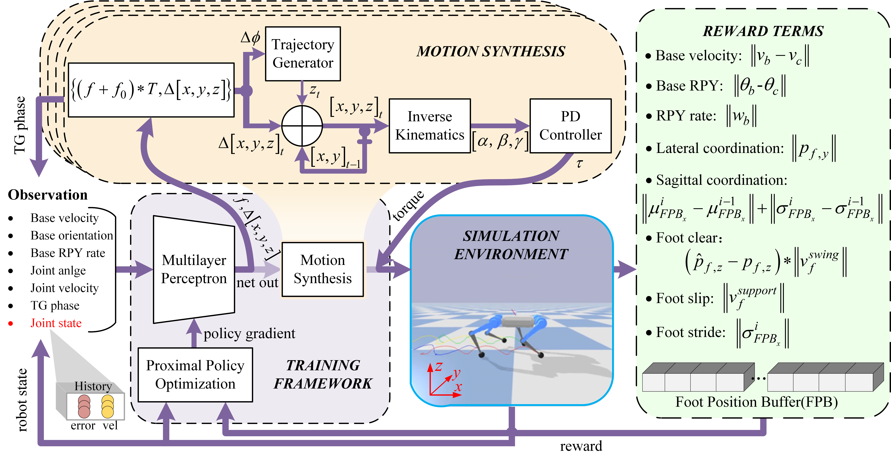

Learning Smooth and Coordinated Quadruped Motions
via Incremental Foot Position Control
Abstract
Learning animal-like motions for quadruped robots is still a challenging problem. Reinforcement learning is a promising approach to learning locomotion behaviors automatically. However, obtaining smooth trajectories still requires a great deal of effort to fine-tune hyperparameters. In this work, we introduce the incremental foot position control for quadruped robots to learn smooth locomotion trajectories and the coordination reward functions to encourage coordinated motions. Compared to the action space of foot positions, that of the foot position increments is more likely to mitigate the abrupt change of joint positions. Extensive experimental results show that the quadruped robot based on the proposed method usually walks with a smooth and coordinated behavior.

Schematic illustration of the proposed training framework.
● Video demonstration: